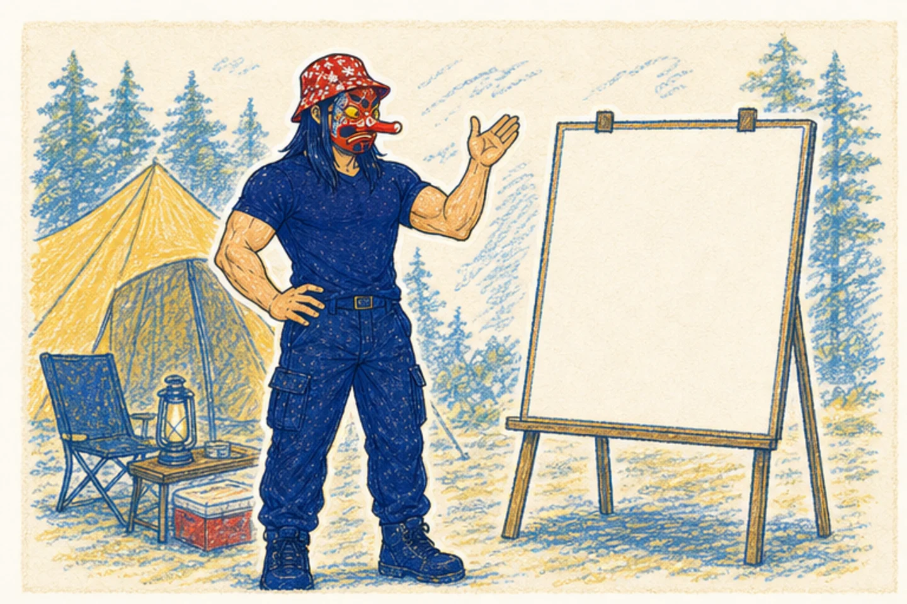
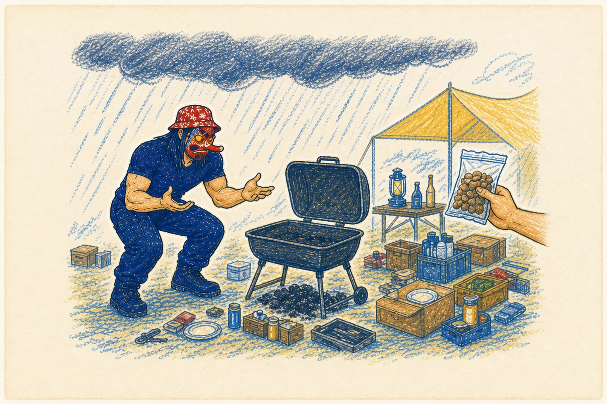
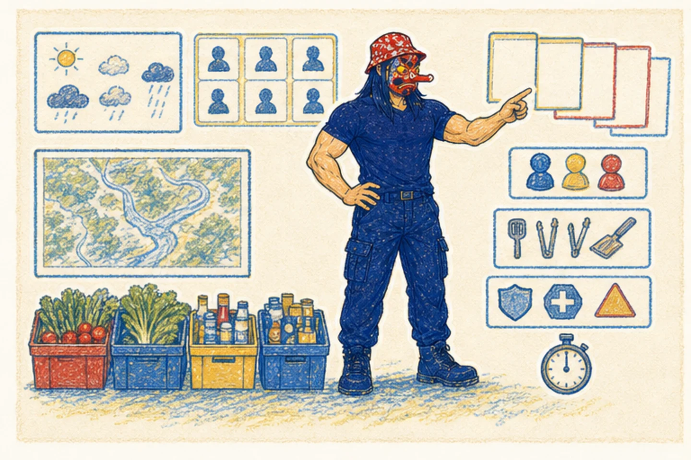
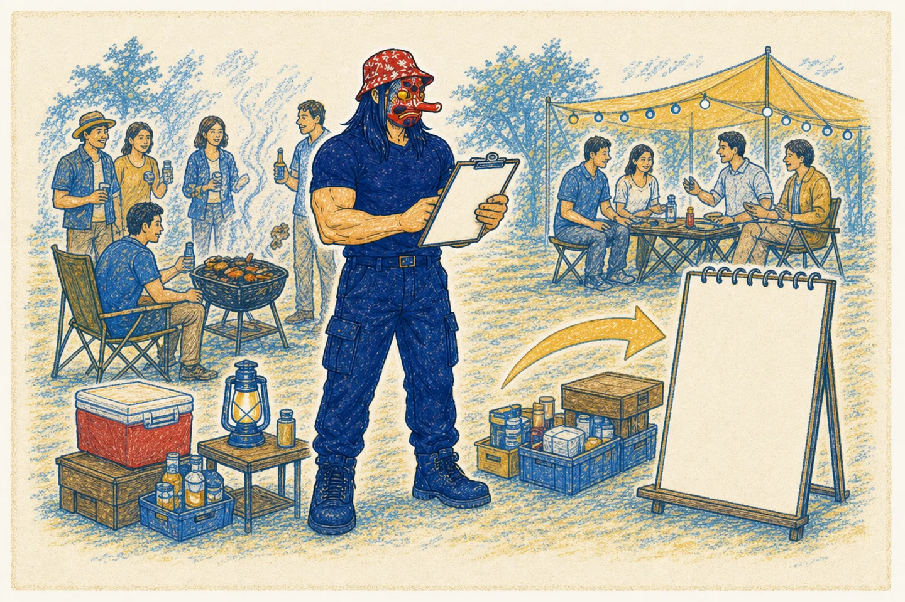

01
未来属于先行者
未来不会像午夜钟声般突然降临，而是先出现在少数人的工作流中。互联网和智能手机的发展轨迹已经验证了这一点：真正的机会，永远产生于共识形成之前。先行者不是预测得最准的人，而是更早把新能力变成日常动作的人。
一场关于技术变革、人的判断力，以及如何把AI真正放进自己工作流的分享。
大家好，我是六叔。今天不想给大家再增加一种“AI焦虑”，也不打算用一个宏大的未来预言放大大家的不安。我们只做三件事：先看清焦虑从哪里来，再把几个容易被说玄的AI概念讲明白，最后带走一套今天回去就能用的工作方法。我的基本判断是：AI不会把人变成无用的人，但会把不会重新组织自己工作的人，推到新的竞争位置上。
点击头像 → 加入社群
每一次技术革命，都会先制造一种“旧世界正在失效”的感觉。真正的问题不是机器会不会替代人，而是我们能不能及时看懂能力曲线、重组工作方式，并保住人的判断与责任。
AI能生成内容，却无法为结果担责；能提供答案，却不能替你判断真假。人的价值不会自动消失，但人必须重新拿回目标、上下文和最终选择权。
担心今天熟悉的任务被自动化，收入与岗位受到直接冲击。
担心机器能写、能画、能编程之后，人的经验与创造力不再稀缺。
担心能力增长超出制度与伦理的响应速度，人类失去最终控制权。
未来不会像午夜钟声般突然降临，而是先出现在少数人的工作流中。互联网和智能手机的发展轨迹已经验证了这一点：真正的机会，永远产生于共识形成之前。先行者不是预测得最准的人，而是更早把新能力变成日常动作的人。
AGI不是某一个时间点的突变，而是一条持续上升的能力曲线。今天它辅助编程，明天参与科研，后天管理流程。与其反复争论“AGI到底到了没有”，不如关注它今天已经能在什么环节产生真实价值。
焦虑通常分三层：工作替代、价值消失、文明颠覆。但使用AI的人会看到不同世界：AI可以生成，却不能担责；可以给答案，却不能判断真假。关键不在于人做不做所有动作，而在于人是否保有决策权。
当AI融合代码与媒体的双重杠杆，个体可能完成过去需要团队才能完成的工作。稀缺资源会转向不可复制的判断力、独特的问题意识与专业沉淀。AI只会放大你的原始方向，所以方向比速度更重要。
未来的角色会更像AI管理者：人类设定目标、提供上下文、做出终极选择；AI负责执行计算、生成方案、调用工具。教育的重心也会转向培养提问能力、上下文能力与责任担当。
建立专属AI工具链，深耕不可替代专长，通过公开作品积累信任，专注长期目标而不是横向比较。拉开差距的从来不是AI本身，而是学习速度与行动精度。
如果大家只记住一句话，我希望是这一句：焦虑不是因为AI太强，而是因为我们还没有把自己的工作拆开来看。接下来我们用几次技术跃迁，看看“替代”这件事到底是怎么发生的，再把Agent、Prompt和Skill放回真实工作里。
每次革命都伴随着守旧者与革新者的冲突。输掉的往往不是能力，而是对新范式的迟疑。
手工劳动被重新组织，工厂与城市随之出现。卢德运动反抗的，是“机器抢走饭碗”的直觉恐惧。
大规模生产成为可能。英国对新技术的迟疑提醒我们：过去的成功、资本短视与文化固化，可能成为变革最大的包袱。
知识变成财富的速度大幅加快。电商出现时，很多人担心实体经济会消失；后来我们看到的是新的需求、新的职业和新的分工。
基础模型、Agent和应用工具正在搭建新的生产基础设施。真正的分水岭，是谁先把它放进自己的工作流。
把名词从热搜里拿下来，放回到一套可理解、可调用、可验收的工作系统里。
从全景看，AI应用不是单一模型，而是一组层层协作的能力：LLM负责“思考”，RAG负责“查资料”，Agent负责“行动”，Harness负责“组织可靠执行”，Skill负责“记住做法”，MCP负责“连接工具”。
理解它们的分工，比背诵定义更重要。
如果一个任务有清晰输入、可复用步骤、明确输出和可检查结果，它就可能成为适合Agent化的任务。
Claude、CodeX、Cursor偏向对话与编程协作；Manus、OpenClaw、Clawdbot、Moltbot、Antigravity、Trae、iFlow等更接近Agent化工作流。工具选择的重点不是“最热”，而是能否进入你的真实任务。
大家可以把Agent想成一个新人同事：你不能只说“帮我做好”，要告诉他目标、背景、资源、禁区和验收标准。LLM是大脑，RAG是开卷考试，Agent是手脚，Harness像一套工作现场，把上下文、状态、工具、权限和验收机制组织起来，让Agent不只是能行动，而是能稳定、可靠地完成任务。Skill是做事方法，MCP则像插板，把它和外部世界连起来。这样理解之后，我们再看市面上的工具，就不会只看产品名字，而会看它在这套系统里扮演什么角色。
从一个“聪明的执行者”，走向一套“可靠的执行系统”：真正决定任务能否稳定落地的，往往是模型周围那套看不见的组织方式。
Agent 是负责把派对办起来的总指挥；Harness 是围绕它搭建的整套工作环境——决定它看见什么、记住什么、能调用什么、必须遵守什么，以及怎样检查和改进结果。

草原、车辆、伙伴与宠物，让一次出发看起来轻松自然；但要组织一场露营烧烤派对，还要把天气、物资、人员与安全真正安排到位。

六叔接到任务：周六办场 30 人的户外露营烧烤。目标听起来只有一句话，但地点、天气、饮食偏好、交通、采购、分工和安全边界，都还藏在这句话背后。

如果只靠一次聪明回答，现场很容易失控：天气突变却没备雨具，木炭漏买，过敏信息来得太晚，烤炉和车辆也没人持续跟进。Agent 很忙，但系统没有替它守住全局。

Harness 把外围工作组织起来：实时天气进入上下文，报名信息写入持久状态，采购与车辆工具按权限调用，采购组、搭建组和安全员并行推进，每个阶段都有检查点。

派对顺利完成并不等于流程结束。系统会记录缺失的雨具、迟到的过敏信息和现场纠偏，把失败轨迹变成下一次报名表、清单与规则的改进依据。
生活里的每一个“安排好”，在系统里都有对应的工程机制。Harness 的价值，就是把这些机制放到 Agent 周围持续运转。
Model 提供能力 → Agent 负责行动 → Harness 组织可靠执行
能力很强，但任务一长、阶段一多，偶发成功不等于稳定交付。
不替模型思考，而是给能力一套可持续、可检查、可恢复的工作秩序。
Harness 不能替代模型能力；模型是核心能力，Harness 是让能力可靠进入现实任务的组织与控制系统。
改进对象不只是一句 Prompt，而是模型周围的上下文、工具、状态、产物存储、检查与编排代码；每次修改都要经过回归验证。
露营案例这次雨具不足、过敏信息收集太晚。复盘后，系统不只是“记住教训”，而是修改下一次报名表的必填项、补充物资清单，并把天气与过敏信息加入出发前检查规则。
安全边界自我改进不是无限自改：可编辑区域必须受限；权限与安全控制位于自我改进循环之外，任何新版本都要通过回归验证，确认没有退化才被接受。
下面八份材料分别回答：怎样搭建可靠环境、怎样运行长任务，以及怎样用执行轨迹继续优化 Harness。
先用四幕露营故事讲清“聪明不等于可靠”：接单时看似简单，现场翻车暴露的是上下文、记忆、工具、分工、权限和验证的缺位。随后把六个生活元素映射到系统机制，再用一句话转场：Agent 是能干的总指挥，Harness 是让总指挥稳定办成事的整套组织系统。最后用雨具与过敏信息的复盘，带出 Harness Engineering：从失败轨迹中修改系统，但安全层与权限边界始终留在自我改进循环之外。
很多人以为Prompt越长、越复杂、技巧越多越好。真正有效的Prompt，是让AI知道自己正在解决什么问题，以及什么结果才算完成。
五个字段沿着一条线往前走，Checkpoint负责把不确定性拉回到人面前。
请完成 [一个明确动作]。
除非涉及不可逆操作、范围变化、或需要我提供信息，否则请继续完成任务后再汇报。
我正在准备一篇面向中文创业者、投资人和 AI 行业关注者的 AI 融资研究文章。
读者对 AI 创业、融资和资本市场有一定了解，但不是专业投资机构分析师。
这篇文章要帮助他们理解当前 AI 公司融资的核心逻辑、资本关注点、以及不同类型 AI 项目的融资难度差异。
请帮我构建这篇文章的分析框架。
除非需要我提供具体公司案例、融资数据来源或文章风格，否则直接完成。
先说你在做什么、目标对象是谁、结果要用于哪里。
明确哪些信息不能假设，哪些条件不足时必须先提问。
要求AI列出依据、不确定性、遗漏和需要进一步调查的地方。
在关键节点设置检查，让任务变成可迭代的协作过程。
现场可以把一句“帮我做一个天涯一日游方案”写成完整Prompt：我是谁、目标对象是谁、预算和时间是什么、偏好是什么、输出要怎么排、哪些内容不能猜。然后要求AI先列出它最没有把握的地方，再开始执行。让观众看到：不是模型突然变聪明了，而是人终于把问题说清楚了。
AI最容易犯的错，不是不会回答，而是在没有充分调查之前就直接开干。
这是一个很强的追问。它会迫使AI列出尚未调查充分的地方，再寻找问题的根本原因。第二个追问是：
我建议大家把这两个问题做成自己的快捷指令。每次对话结束都问一遍。它们的价值不在于让AI说更多，而在于让AI暴露不确定性，让我们有机会检查它没有说出来的部分。
下面这些问题不复杂，但会显著提升对话质量。
用于发现潜在漏洞。
适合创意头脑风暴。
适合加强提问能力。
适合建立可复用的质量标准。
不要追逐一张永远更新不完的榜单。把开源Skill按任务归类，先解决一个真实问题，再逐步构建自己的能力网络。
28种版式、10套主题；长文拆解，一键生成小红书图文和公众号封面。
自媒体视觉工具箱，也覆盖封面图、信息图等视觉包装方案。
爆款笔记生成器，包含5种标题公式。
账号运营工具，包含推荐流分析。
四平台同步发布，目标是消除机械感和AI痕迹。
AI视频封面制作。
把文章观点转为“小黑2.0”风格的商业海报、视觉配图和案例图。
围绕封面图、信息图和内容分发做完整的视觉解决方案。
覆盖软件研发全流程的21个Skill，服务TypeScript教育、AI编程和工程实践。
把WWDC十年设计经验转成AI可执行规则，从安全感、可预测性和自然操纵出发。
全流程优化，覆盖选题诊断、标题优化和商业表达一体化。
格式转换，把Markdown转成多种格式。
去AI化，让内容表达更自然，减少机械感。
深度报告，把长文做结构化处理。
PPT生成，把文章转成PPT幻灯片。
内容研究，从资料搜索到提纲生成。
知识库写作，基于资料库生成内容，减少胡编。
追随建造者而非网红；整理25位X/Twitter Builders、5档播客、2个博客，帮助半小时形成行业判断框架。
通过MCP连接13个平台，支持B站、小红书、YouTube、V2EX等全网调研，项目介绍标注约50.8K Stars。
项目介绍提到其蒸馏吴恩达课程并产出25个Skill，含巴菲特信件、黄帝内经等资源；项目地址需会前复核。
将倪海厦12门中医课程结构化，支持按症状、课程模块和课次检索，并输出带截图证据的索引；明确不做诊断处方剂量。
把PDF、EPUB书籍封装为Claude专属Skill，拆分书籍架构和术语，按需调取章节，降低整本知识库的碎片化和幻觉。
将12个部门、144种专业工作转化为AI员工，覆盖开发、设计、营销等领域。
如何用最少Token编程：9条认知公理、马斯克5步工程法，以及Karpathy编码四原则。
不是让AI“更会写”，而是让经验、边界、工具和验收标准可以被重复调用。
内容、研发、研究、知识库和AI员工并不是五个孤岛，而是可以围绕一个真实目标组装成工作流。
工具会更新，人的工作方法才是长期资产。不要让“研究工具”取代“完成工作”。
这份清单不是推荐榜单，而是一张地图。大家可以按自己的职业选择一类：内容创作者先从视觉和研究开始，工程师先从研发Skill开始，管理者先从知识库和Agent协作开始。工具最重要的价值，是降低开始行动的门槛。
在日常使用AI的过程中，积累属于自己的Skill体系。Skill不是一篇“万能提示词”，而是把个人经验变成一套可以渐进读取、稳定执行、持续迭代的文件夹系统。
Skill的目标不是让AI更会聊天，而是让它更稳定地完成特定工作。
Skill不是单一文档，而是包含脚本、参考文档、模板的文件夹系统，本质是上下文工程。
先看名称筛选，再读正文确认，最后精确定位，避免信息过载拖慢AI性能。
检查质量的Skill比写代码的Skill更有价值，因为稳定、可验证的交付更稀缺。
避坑指南记录隐性经验，可执行脚本提供现成工具，二者结合才能稳定工作。
简介要写成用户真实会说的话，例如“帮我盯着提交”，而不是产品说明书。
从薄开始（v0.1），根据失败逐步完善，每次踩坑就增加一条经验。
精准界定Skill能力范围，避免过于宽泛导致与其他Skill冲突。
只保留AI不知道、没有就会做错的内容；其余冗余信息都应该删掉。
我们不需要一开始就构建一个庞大的Skill仓库。今天回去，选一个你每周都会做、又经常返工的任务，给它写一个最小Skill：什么时候触发、需要哪些资料、要遵守什么边界、最后怎么检查。下一次失败，就把失败写回去。Skill不是一次性买来的工具，而是你和AI共同积累出来的工作记忆。
利用自己的所长，适配适合自己的工具，让1+1真正大于2。
从一个真实的重复任务开始，找到可复用的流程与工具。
把判断力、问题意识、专业沉淀变成AI无法自动复制的方向。
持续交付、复盘和分享，让能力被看见，而不是只在焦虑里横向比较。
愿我们不被流量制造的焦虑裹挟，保持好奇心和探索精神，在每一次技术变革里，找到自己的位置。